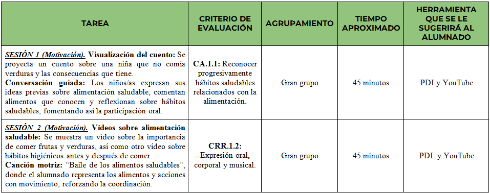
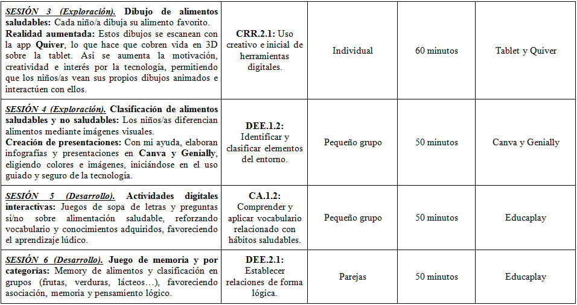
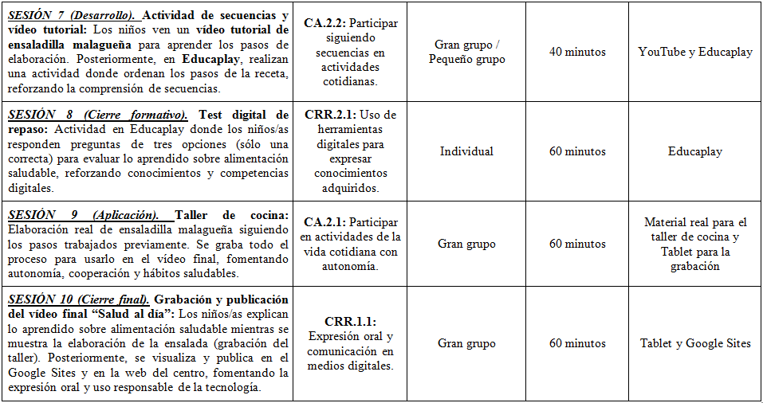

La evaluación del proyecto se realiza de forma continua, teniendo en cuenta tanto el proceso como el resultado del aprendizaje del alumnado. A lo largo de todo el desarrollo del proyecto se valorará no solo el producto final, sino también la implicación del alumnado, su participación, el trabajo diario y la adquisición de los aprendizajes previstos.
Para ello, se han establecido una serie de criterios de evaluación relacionados con los objetivos, saberes y competencias trabajadas durante el proyecto. Estos criterios permiten comprobar el progreso del alumnado de una manera más concreta y objetiva.
A continuación, se presenta una tabla en la que se recogen estos criterios de evaluación y su relación con las tareas desarrolladas en las distintas sesiones del proyecto. De esta forma, se puede identificar qué se evalúa en cada actividad y cómo cada tarea contribuye al proceso de aprendizaje.



Para llevar a cabo esta evaluación se utilizarán diferentes instrumentos que permitirán recoger información variada sobre el trabajo del alumnado:
- Lista de cotejo para el seguimiento del trabajo diario.
- Cuestionario digital adaptado al nivel del alumnado.
- Rúbrica para la evaluación del producto final.
- Autoevaluación del alumnado mediante actividades sencillas.
Estos instrumentos permiten obtener una visión global del aprendizaje y facilitan la toma de decisiones educativas.
A continuación, se incluyen los instrumentos de evaluación utilizados en el proyecto: